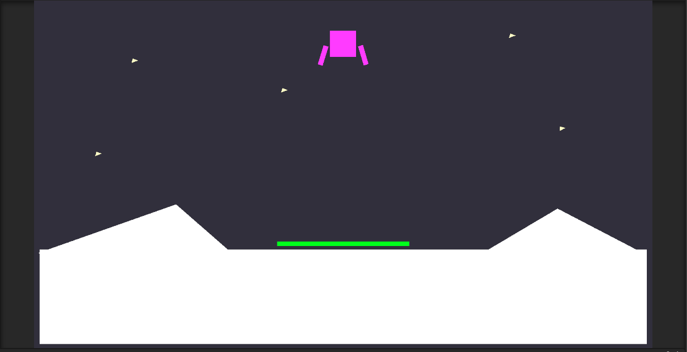

<link rel="stylesheet" href="css/photos.css">
<link rel="stylesheet" href="css/project_style.css">


				<!-- Banner -->
					<section id="banner">
						<div class="inner">
							<h2>{{ site.title }}</h2>
							<p>{{ site.description | markdownify }}</p>
							<ul class="actions">
								<li><a href="resume.html" class="button special">Resume</a></li>
							</ul>
						</div>
						<a href="#two" class="more scrolly">Learn More</a>
					</section>

				<!-- Two -->
					<section id="two" class="wrapper alt style2">
						<section class="spotlight">
							<div class="image"> 
								<a href="Projects.html"></a>
							</div>
							<div class="content">
								<h2>Lunar Lander with Reinforcement Learning</h2>
								<p>Unity application developed using the MLAgents library to train a spacecraft to autonomously land on a specified area within confined boundaries. Interested? <a href="Projects.html" style="color: #F6491A">Click Here!</a></p>
							</div>
						</section>
						<section class="spotlight">
							<div class="image">
								<a href="Projects.html"></a>
							</div>
								<div class="content">
								<h2>Raspberry Pi Drone</h2>
								<p>A fully functional drone which includes: GPS, Telemetry Modules, ESC's, Brushless Motors. Powered by LIPO batteries,
									configured using ArduPilot<span>&#39;</span>s Mission Planner Software. <a href="Projects.html" style="color: #F6491A">Read more about this Project.</a>
									 </p>
							</div>
						</section>

						<section class="spotlight">
							<div class="image">
								<a href="Projects.html"></a>
							</div>
							<div class="content">
								<h2>Other Projects</h2>
								<p> I really enjoy spending my time learning various 
									things and a big part in doing this is working on random projects, whether
									that be for a school club, for work or simply for myself! <a href="Projects.html" style="color: #F6491A">See my other Projects!</a></p>
							</div>
						</section>
					</section>

				<!-- Three -->
					<section id="three" class="wrapper style3 special">
						<div class="inner">
							<header class="major">
								<h2>What I do on my Free Time</h2>
								<p>From Breakdancing, to cooking, to reading, I like to be a jack of all trades, but master of "some".</p>
							</header>
							<ul class="features">
								<li class="icon fa-music">
									<h3>Breakdance</h3>
									<p>One of my favourite pass times. I could do it night and day, it combines my favourite aspects of exercises into an interesting way to express yourself</p>
								</li>
								<li class="icon fa-dumbbell">
									<h3>Calisthenics</h3>
									<p>From Static holds to dynamic movements, I've been practising calisthenics for over 3 years!</p>
								</li>
								<li class="icon fa-book-open">
									<h3>Reading</h3>
									<p>Honestly will read anything, always looking for recommendations. Favourites are: The Hobbit, Homo Deus & The Institute</p>
								</li>
								<li class="icon fa-bowl-food">
									<h3>Cooking</h3>
									<p>Picked it up while living on my own. Fell in love with the process, always looking for new recipes to try!</p>
								</li>
								<li class="icon fa-cube">
									<h3>3D Art</h3>
									<p>Allows me to practise my creativity. My goal is to do it more often, I tend to use Blender for all things 3D art.</p>
								</li>
								<li class="icon fa-plane">
									<h3>Traveling</h3>
									<p>Costly but worth it. Looking to travel more frequently, going to Japan as a graduation present for myself!</p>
								</li>
							</ul>
						</div>
					</section>

					
				<!-- BLOG -->
				<section id="one" class="wrapper style1 special">

					<div class="photo-grid">
		
						

						<div class="inner">
							<header class="major">
								<h2>Blog</h2>
									<p>Talking, Talking, Talking ... and more talking, it's what I like to do.</p>
									<ul class="actions">
										<li><a href="blog.html" class="button special">Blog</a></li>
									</ul>
							</header>
							<ul class="icons major">
								<li><span class="icon fa-diamond major style1"><span class="label">Lorem</span></span></li>
								<li><span class="icon fa-heart-o major style2"><span class="label">Ipsum</span></span></li>
								<li><span class="icon fa-code major style3"><span class="label">Dolor</span></span></li>
							</ul>
						</div>

						

					</div>

				</section>

				<!-- CTA -->
					<section id="cta" class="wrapper style4">
						<div class="inner">
							<header>
								<h2>Contact Me!</h2>
								<p>Feel Free to reach out to discuss opportunities or simply arrange a coffee chat.</p>
							</header>
							<ul class="actions vertical">
								<li><a href="mailto: paul.kokhanov@gmail.com" class="button fit special">Email</a></li>
								<li><a href="resume.html" class="button fit">Resume</a></li>
							</ul>
						</div>
					</section>
